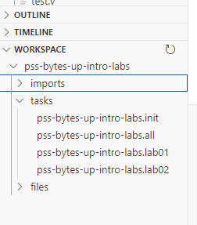
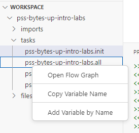
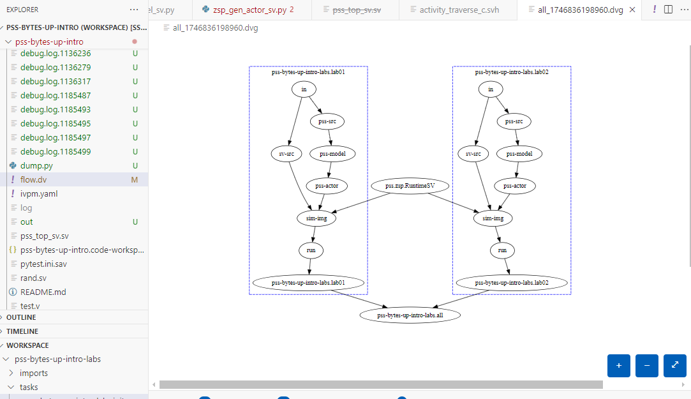
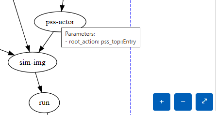

DV Flow VSCode Extension¶
DV Flow provides an extension for the VSCode development environment to assist in developing and using DV Flow descriptions.
Installing¶
The extension can be installed from the VSCode Marketplace.
Configuring¶
The DV Flow extension uses DV Flow Manager to obtain much of the data that is displayed. The VSCode extension must be have access to a Python interpreter with access to the DV Flow Manager package.
The DV Flow extension searches for the appropriate interpreter as follows:
Checks the python.defaultInterpreterPath setting in the workspace settings
Checks for the existence of an IVPM packages directory
Checks the PATH for the python3 executable
Features¶
Workspace View¶
The DV Flow extension contributes a workspace outline view. This view shows information about the tasks defined in the workspace package.
This view is always active.
The view can be manually-refreshed via refresh button.
Single-clicking (selecting) an entry in the tasks collection will open an editor on the task’s declaration.
Static Graph View¶
A graphical representation of as task’s execution graph can be opened from the task entries in the workspace view.
This will open a new tab containing a graphical view of the task graph.
Hovering over nodes in the graph will show the value of the task’s parameters.
flow.dv Editor¶
A simple YAML text editor is provided for editing flow.dv files.